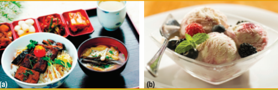
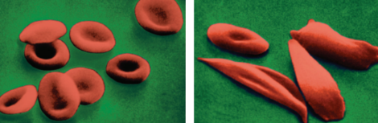

Callout
Mutations can be caused by environmental agents such as damaging radiation and certain chemicals, or errors during cell division. A mutation may have a positive, negative, or neutral effect on the phenotype of the individual. Some gene mutations result in the new cell dying and being recycled. However, sometimes cells carrying mutations survive and replicate.
Select each tab to learn more.
One type of mutation that can occur during DNA replication is called a point mutation. A point mutation is a failure by the replicating cell to copy the genetic information accurately. There are several types of point mutations, including three major ones: base-pair substitutions, insertions, and deletions.
In a base-pair substitution, one nitrogenous base is accidentally replaced with a different base. In an insertion, one or more nitrogenous bases are inserted during the copying process. In a deletion, one or more nitrogenous bases are deleted during the copying process.

(a) In a base-pair substitution, one nucleotide is replaced by a different nucleotide.
(b) In an insertion, a nucleotide is added.
(c) In a deletion, one nucleotide is eliminated. When a
mutation occurs, both strands of the DNA molecule are affected. Only the changes in a single strand
are shown here.
Errors that involve an entire chromosome or a large part of a chromosome can also occur. A mutation at this scale is known as a chromosome mutation. An example of a chromosome mutation is non-disjunction.
Mutations can occur as the DNA in an organism’s cells is copied. Most mutations occur in parts of the DNA that do not code for genes. Many mutations that do occur are immediately corrected during the copying process. However, as organisms age, mistakes during mitosis occur more frequently and can lead to diseases such as cancer.
If the mutation is dominant, it could be expressed phenotypically in the first generation (as with Huntington’s disease). If a mutation is recessive, it will likely not be expressed for many generations until, by chance, two individuals with the same mutation produce a homozygous recessive mutation in their offspring.
Callout
A mutation that has been passed on through generations can be neutral, harmful, or beneficial. In some cases, a mutation seems to be both harmful and beneficial. For example, individuals with sickle-cell anemia (SCA) have inherited a mutated gene in which a single adenine base was substituted by a thymine. Healthy red blood cells, which carry oxygen throughout the body, are round.

C-shaped sickle cells are more fragile than regular-shaped red blood cells and are easily destroyed in the bloodstream.
Callout
Lactose intolerance is a very common trait in which a young adult or adult individual is unable to digest lactose, the common sugar in milk. People who are lactose intolerant do not produce enough of the enzyme needed to digest lactose. If people who are lactose intolerant consume a lot of dairy products, undigested lactose will be metabolized by intestinal bacteria.
This mutation is an example of a gene mutation that has become very beneficial in cultures that have domesticated livestock for milk production. Both forms of the gene (tolerant and intolerant) are relatively common, but the proportion of tolerance varies with geography, depending on the agricultural history of the population.
(a) Asian cuisines have very few cows’ milk–based dishes because a high percentage of Asian people are lactose intolerant.
(b) European cultures consume milk and other dairy products such as cheese and milk-based desserts. Most European people are lactose tolerant.
Callout
What causes a mutation to occur? Some mutations occur naturally, while others occur after exposure to an outside agent that causes the change. Spontaneous mutations are those that happen in nature by accident. They are a result of incorrect copying of DNA during the replication of chromosomes in mitosis and meiosis.
Induced mutations are a result of exposure to a physical or chemical agent that causes a mutation, such as radiation or cigarette smoke. For example, there is a direct correlation between exposure to harmful UV rays and induction of a mutation that causes skin cancer.